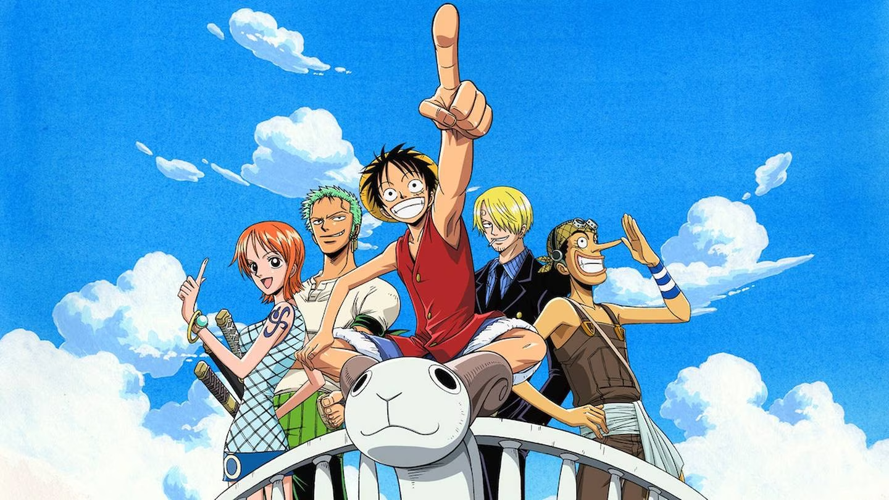

One piece

One Piece é um anime que conta a história do jovem Monkey D. Luffy, que ganhou poderes de borracha depois de comer uma fruta do diabo. O enredo mostra as aventuras de Luffy e seu grupo, Os Piratas de Chapéu de Palha, em busca do One Piece, o tesouro mais procurado do mundo.
Esse tesouro havia pertencido a Gold Roger, o lendário Rei dos Piratas. Ele foi capturado, condenado à execução pelo Governo Mundial e suas últimas palavras lançaram legiões aos mares."Meu tesouro? Se quiserem, podem pegá-lo. Procurem-no! Ele contém tudo que este mundo pode oferecer!". Porém, diferentemente de outros caçadores de tesouro, Luffy possui motivações simples: se aventurar e conhecer novos amigos. Para viver essas experiências, ele e os amigos partem em direção à Grand Line, a maisperigosa das rotas do mundo. One Piece é um anime do gênero Shonen, voltado para o público adolescente e jovens adultos. Considerado uma das produções de maior sucesso das últimas décadas, ele possui mais de 950 episódios, é distribuídopela Toei Animations e no Brasil pode ser assistido no serviço de streaming Crunchyroll. Assista